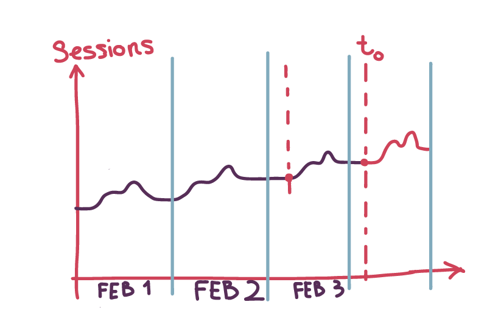
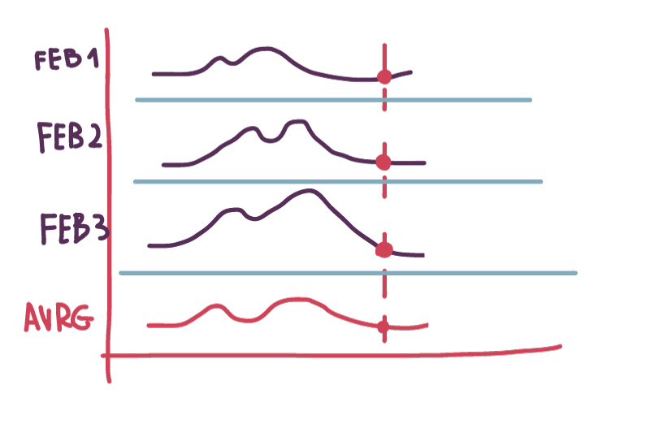
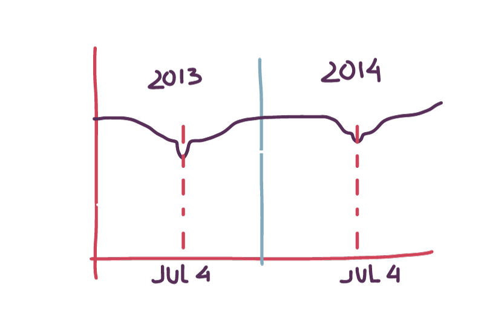
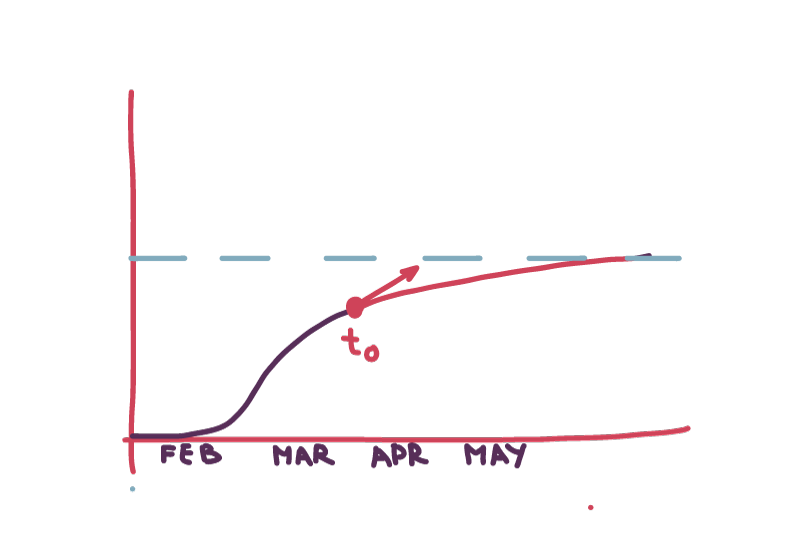
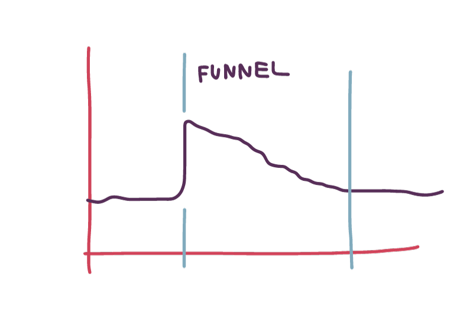
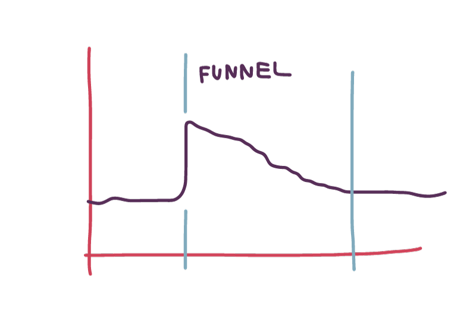

Forecasting Web Traffic [draft 1]
Why forecasting is important?
Say, we need to measure the impact of some event to the traffic. To do that we need to compare the real traffic observed after some point in time T (event time) with the hypothetical unaffected traffic. In this case, the task is to predict (extrapolate) unaffected traffic after point T.
How to predict?
Obviously, we need to use historical data from the past. And there are certain patterns and trends.-
Naive approach.
The most noticeable pattern is the repeating change in number of sessions during the day. For example, you always have more visitors at 9AM than at 5AM
So, the most naive approach would be to see what was the number of sessions 24 hrs ago. We could make an assumption that today’s traffic will be the same. In many cases this simplistic approach would work, but we need to be more accurate.
 -
less naive approach
What if yesterday’s traffic was affected by an outage or hot news?
Then, let’s calculate the average traffic at time T. This is better, but it is still far from the accuracy we need.
 -
week cycles
There are week cycles. The activity of users on Mondays may differ significantly from activity on Sundays. So, the less naive approach would be to calculate the average traffic curve for each day of the week.
-
year cycles
There are year cycles. The summer traffic may differ from traffic in winter.
Moreover, you should expect noticeable annual deviations in regional traffic on certain dates (outliers) like public holidays, deadlines to file taxes, elections or .. whatever.
If you deal with South America or Australia, It could be so, that visitors from the Southern hemisphere expose different or even the opposite behavioral pattern. Thus, we have to split our historical data according to visitor’s segments and to build a fitting year curve for each segment.
The simplest idea is to interpolate annual curve by applying the Moving Average technique (see https://en.wikipedia.org/wiki/Moving_average) This should be done after removing data related to certain dates (outliers).
 -
Consider trends
For new sites it is quite typical that the total number of visitors grows over time. Often, a curve looks like the sigmoid. If the point T lies on the slope, we need to take into account the trend.
 -
random deviations
There are too many things that could impact the “normal” traffic. Ads campaigns, weather, news - just to name the few. Basically, there are 3 types of patterns we may observe in traffic graphs:
- cylinder
- funnel
- bell
Ideally, we need to find all these and cut them away before calculating averages. Noticeable, that these deviations might be observed within certain segments of visitors only. For example, you may see a “funnel” in Facebook traffic, but nothing like that in AdWords traffic. This simplifies a lot the detection of deviations.

 
